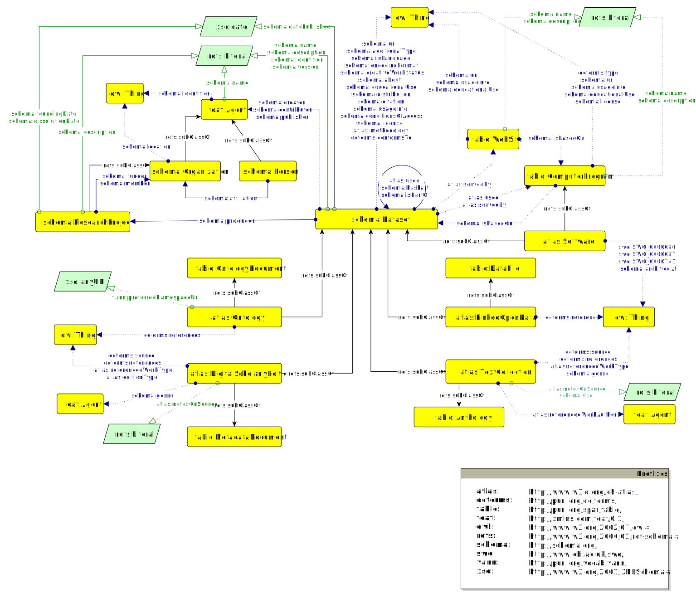
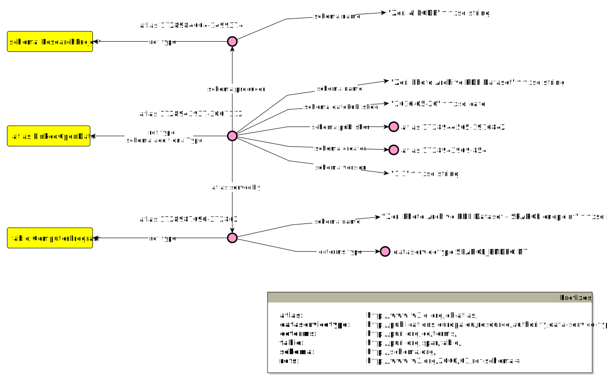

The ATLAS Ontology is an OWL 2 DL ontology, designed to effectively represent scholarly research projects and their outcomes within the Cultural Heritage domain. In particular, it focuses on highlighting the key characteristics of significant types of research products (Text Collection, Digital Scholarly Edition, Linked Open Data, Ontology, and Software), while considering their unique attributes and specifications. In so doing, it seeks to realise the potential of sharing protocols, good practices, guidelines and evaluation frameworks in the humanities.
The ATLAS Ontology integrates existing and complementary ontological entities from three main standards—Schema.org, DCTerms, and FaBiO (the FRBR-aligned Bibliographic Ontology)—and introduces new ATLAS Classes and Properties to enhance granularity and specificity, thereby facilitating coherent connections between Classes across different vocabularies.
The following representation illustrates the Classes (rectangles) defined within the ATLAS ontology, object properties (solid lines beginning with a solid circle and ending with a solid arrow), and assertions among classes (solid lines ending with a solid arrow). At the core of this model is the schema:Dataset class, which defines Research Products as structured sets of information focused on specific topics of interest. This class branches into five specialized subclasses (atlas:LinkedOpenData ; atlas:DigitalScholarlyEdition ; atlas:Ontology ; atlas:Software ; atlas:TextCollection), each designed to provide a more detailed definition and categorization of various types of Research Products. Consequently, each subclass is characterized by distinct properties, and for enhanced clarity, each is also aligned as a subclass of a corresponding class from the FaBiO ontology. This alignment also establishes a meaningful connection with the FRBR model, positioning ATLAS Research Products as Expressions within that framework.

The relationship between a Research Product and the Research Project responsible for its creation is expressed through the schema:producer property, which links a schema:Dataset instance to a schema:Organization, more specifically to a schema:ResearchProject.
The ATLAS ontology also aims to provide detailed information on the access methods for Research Products. To support this, two key classes from the FaBiO ontology—fabio:ComputerProgram and fabio:WebSite—have been integrated. The former encompasses any type of computer program, including SPARQL endpoints or API services, which facilitates access to the content of a schema:Dataset by offering specific functionalities. In other cases, a Research Product may be made accessible through a dedicated website, as seen with digital edition visualization platforms. These websites typically use advanced software to process the content of the Research Product and generate an interactive browsing interface.
The illustration below presents a simplified use case. A Research Product, specifically an atlas:LinkedOpenData, is connected to its Research Project (schema:ResearchProject) and SPARQL Endpoint (fabio:ComputerProgram).
